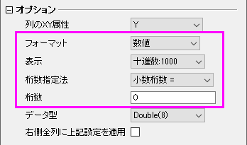

最終更新日：2025/4/22
すべての桁を表示した状態で大きな整数をインポートする方法には、2つの手段があります。
デフォルトでは、15桁を超える整数（例：ID番号など）は自動的に文字列としてインポートされ、1E15 のような指数表記には変換されません。一方、15桁未満の大きな整数は数値としてインポートされるため、指数表記で表示される場合があります。
Note:
|
Origin 2025b以降では、11桁以下の大きな整数であれば、小数点以下の桁数を0に設定することで、すべての桁を表示させることができます。設定方法は以下の通りです。

Note:
|
キーワード:ビッグデータ, 大規模 , インポート, コピーペースト, Excelからコピー, クリップボード, 全桁, 小数, 科学表記, 標準フォーマット